Automatically extracted visual regions. Page numbers refer to source PDF; crops may include tables, equations or text. Not numeric curve digitization.
PDF page 1, visual region 1PDF page 2, visual region 1PDF page 3, visual region 1
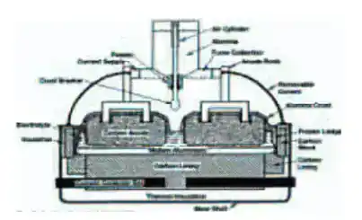
PDF page 17, visual region 1
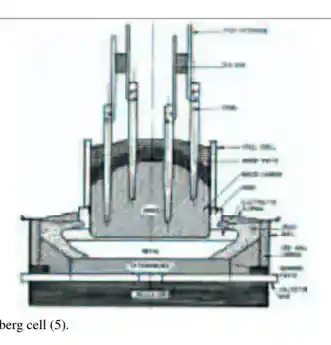
PDF page 17, visual region 2
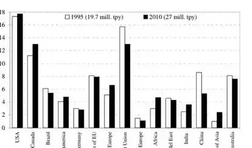
PDF page 18, visual region 1
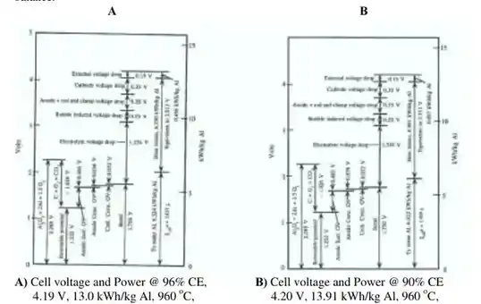
PDF page 21, visual region 1
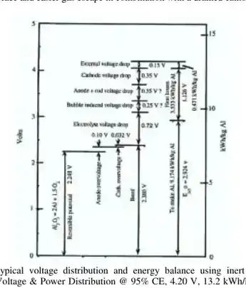
PDF page 22, visual region 1
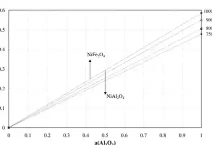
PDF page 34, visual region 1
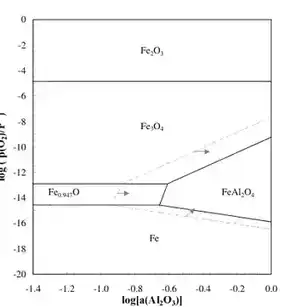
PDF page 37, visual region 1
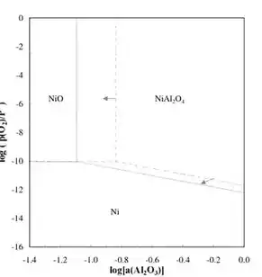
PDF page 38, visual region 1
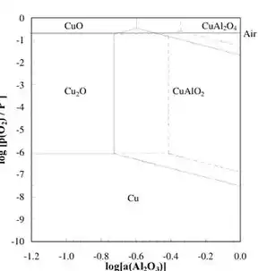
PDF page 41, visual region 1
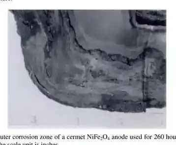
PDF page 50, visual region 1
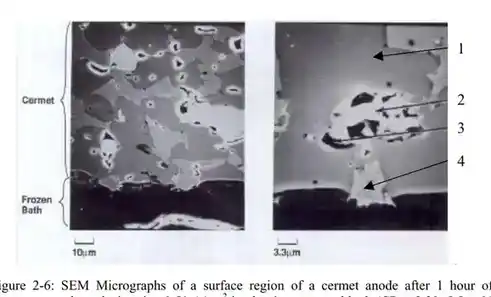
PDF page 53, visual region 1PDF page 62, visual region 1
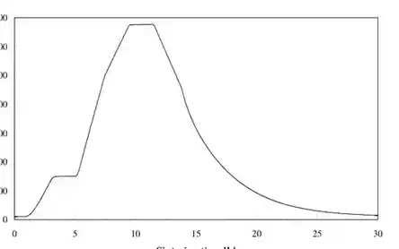
PDF page 68, visual region 1
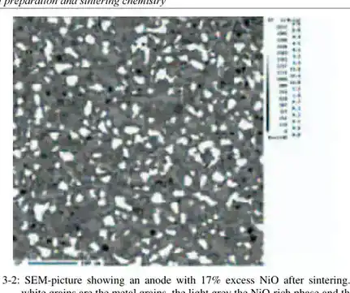
PDF page 73, visual region 1
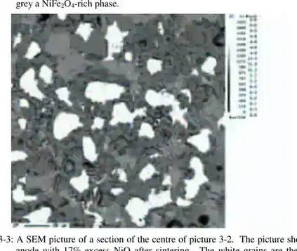
PDF page 73, visual region 2
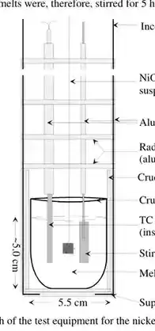
PDF page 77, visual region 1
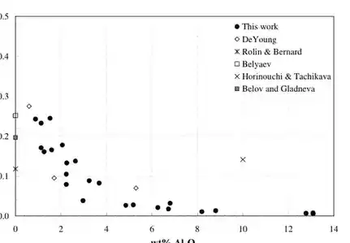
PDF page 79, visual region 1
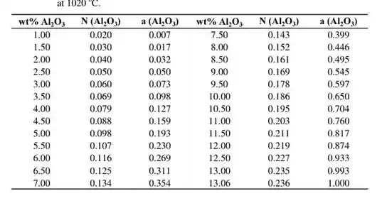
PDF page 80, visual region 1
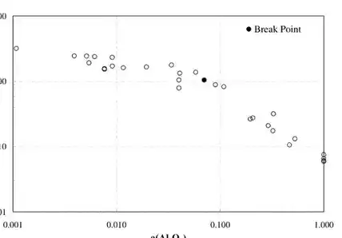
PDF page 81, visual region 1
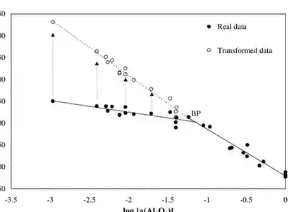
PDF page 84, visual region 1
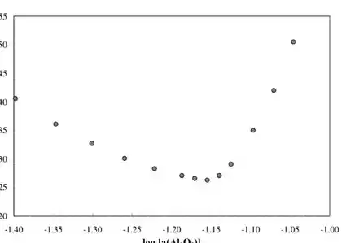
PDF page 84, visual region 2
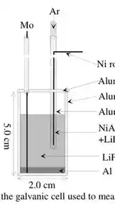
PDF page 87, visual region 1
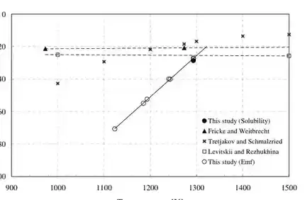
PDF page 89, visual region 1
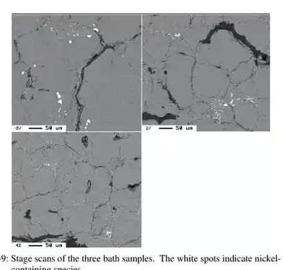
PDF page 91, visual region 1
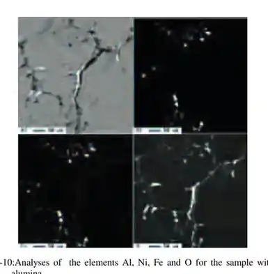
PDF page 92, visual region 1
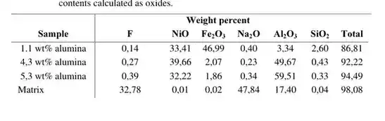
PDF page 92, visual region 2
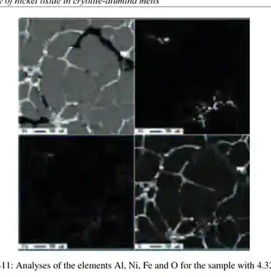
PDF page 93, visual region 1
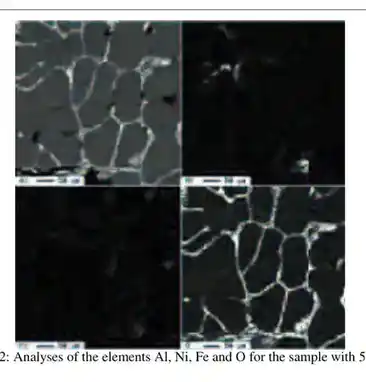
PDF page 94, visual region 1
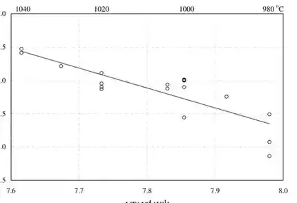
PDF page 97, visual region 1
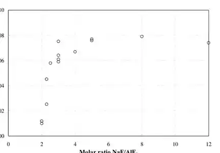
PDF page 99, visual region 1
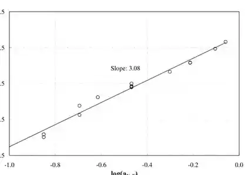
PDF page 101, visual region 1
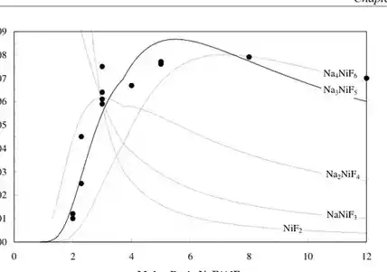
PDF page 102, visual region 1PDF page 106, visual region 1
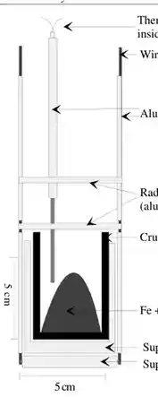
PDF page 111, visual region 1
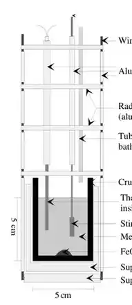
PDF page 112, visual region 1
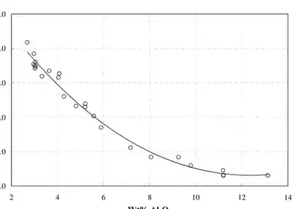
PDF page 114, visual region 1
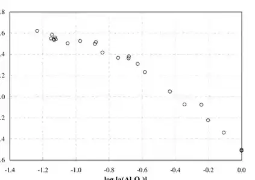
PDF page 115, visual region 1
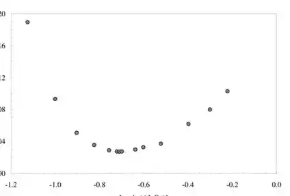
PDF page 116, visual region 1
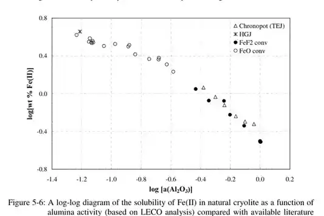
PDF page 118, visual region 1
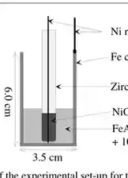
PDF page 120, visual region 1
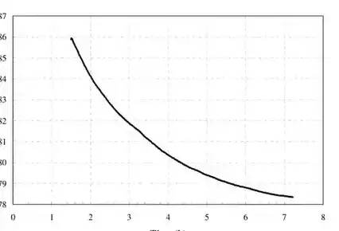
PDF page 120, visual region 2
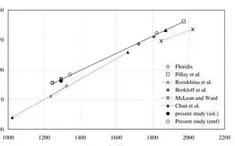
PDF page 122, visual region 1
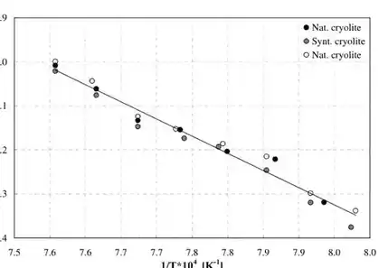
PDF page 127, visual region 1
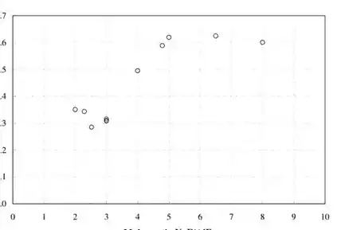
PDF page 129, visual region 1
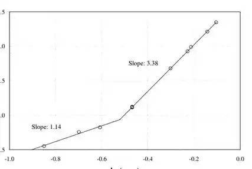
PDF page 130, visual region 1
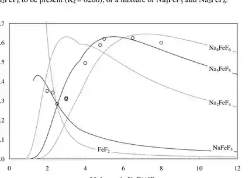
PDF page 131, visual region 1
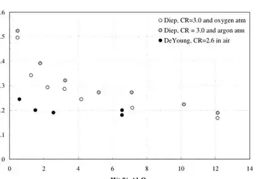
PDF page 132, visual region 1
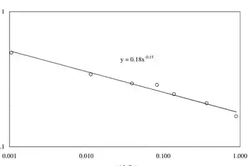
PDF page 133, visual region 1
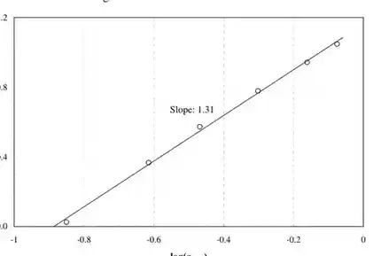
PDF page 134, visual region 1
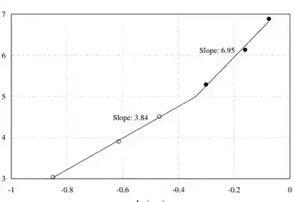
PDF page 135, visual region 1
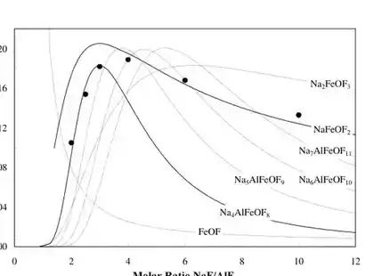
PDF page 136, visual region 1
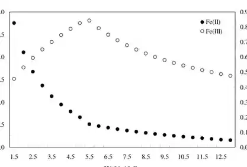
PDF page 141, visual region 1PDF page 143, visual region 1PDF page 143, visual region 2PDF page 144, visual region 1PDF page 144, visual region 2PDF page 146, visual region 1PDF page 148, visual region 1PDF page 152, visual region 1PDF page 156, visual region 1PDF page 157, visual region 1PDF page 158, visual region 1PDF page 159, visual region 1PDF page 160, visual region 1PDF page 161, visual region 1PDF page 163, visual region 1PDF page 164, visual region 1PDF page 166, visual region 1PDF page 167, visual region 1PDF page 168, visual region 1PDF page 169, visual region 1PDF page 170, visual region 1PDF page 171, visual region 1PDF page 172, visual region 1PDF page 172, visual region 2PDF page 173, visual region 1PDF page 175, visual region 1PDF page 176, visual region 1PDF page 178, visual region 1PDF page 183, visual region 1PDF page 184, visual region 1PDF page 185, visual region 1PDF page 185, visual region 2PDF page 186, visual region 1PDF page 187, visual region 1PDF page 190, visual region 1PDF page 191, visual region 1PDF page 192, visual region 1PDF page 193, visual region 1PDF page 194, visual region 1PDF page 196, visual region 1PDF page 197, visual region 1PDF page 198, visual region 1PDF page 199, visual region 1PDF page 202, visual region 1PDF page 203, visual region 1PDF page 204, visual region 1PDF page 205, visual region 1PDF page 206, visual region 1PDF page 207, visual region 1PDF page 208, visual region 1PDF page 216, visual region 1PDF page 218, visual region 1PDF page 219, visual region 1PDF page 220, visual region 1PDF page 223, visual region 1PDF page 223, visual region 2PDF page 223, visual region 3PDF page 224, visual region 1PDF page 225, visual region 1PDF page 233, visual region 1PDF page 234, visual region 1PDF page 234, visual region 2PDF page 236, visual region 2PDF page 238, visual region 1PDF page 238, visual region 2PDF page 239, visual region 1PDF page 244, visual region 1PDF page 247, visual region 1PDF page 248, visual region 1PDF page 249, visual region 1PDF page 252, visual region 1PDF page 252, visual region 2PDF page 256, visual region 1PDF page 257, visual region 1PDF page 258, visual region 1PDF page 262, visual region 1PDF page 262, visual region 2PDF page 270, visual region 1PDF page 271, visual region 1PDF page 273, visual region 1PDF page 280, visual region 1PDF page 281, visual region 1PDF page 282, visual region 1PDF page 282, visual region 2PDF page 283, visual region 1PDF page 283, visual region 2PDF page 284, visual region 1PDF page 284, visual region 2PDF page 285, visual region 1PDF page 285, visual region 2PDF page 285, visual region 3PDF page 286, visual region 1PDF page 286, visual region 2PDF page 287, visual region 1PDF page 288, visual region 1PDF page 288, visual region 2PDF page 289, visual region 1PDF page 291, visual region 1PDF page 291, visual region 2PDF page 292, visual region 1PDF page 292, visual region 2